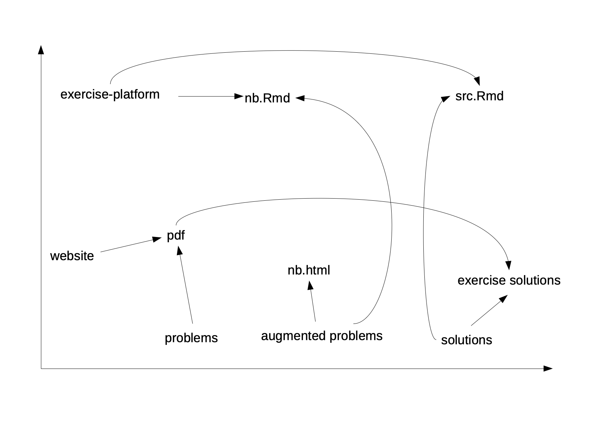

The concepts behind the deployment process of different output instances of exercises are outlined.
The deployment process of an exercise consists of the rendering of the source Rmd file to the required output documents which are published to the students. The published documents consist of a pdf-document that is made available on the website. On the exercise platform, an RStudio notebook is given to the students. The students can self-check their solutions with a document that contains the master-solutions.
The deployment process must be easy and seamless, because the time spent for the deployment should be minimal and the deployment must be fast. The reasons for this is that the time spent to develop new exercise should be maximal and in case when an error is found somewhere in the exercise, the correction and re-deployment should be possible with a single function call.
Problems and solutions of exercises are all written in one single unified Rmarkdown source file. This source files also contains additional information that is only shown in specific output instances. The different sections in the source file are indicated with tags. The tags are hidden in comments for Markdown or HTML.
The different output instances can be characterized by different dimensions. One dimension is the amount of information that is shown in the output. In this first dimension, we can separate between exercise problem and problem solutions. A third category is the exercise notebooks.
The second dimension is the deployment target. In this dimension, we can distinguish between the website and the exercise platform.
The following diagram shows the different dimensions.

In a first step, we have to produce the different versions of the source files from the unified Rmd source file to produce the different output instances.
The source file for the solution output instances are produced from the unchanged unified Rmd source file. The pdf-document with the solutions are created by rendering the unified Rmd source file. For the exercise platform the original unified Rmd source document is used.
The output instances for the exercise problems are produced by cutting out the solution sections and the augmented information for the exercise notebook for the exercise platform. After cutting out the solutions and the augmented information, a reduced source file containing only the exercise problems is produced. This reduced source file is used to produce the pdf-document for the website.
The proposed approach to a first solution is outlined in this section. In a first step the unified Rmd source file is read into a character vector.
s_uni_src_path <- system.file("extdata", "asm_ex06.Rmd", package = "rteachtools")
vec_uni_src <- readLines(s_uni_src_path)
head(vec_uni_src)
#> [1] "---"
#> [2] "title: Applied Statistical Methods - `r tools::toTitleCase(params$doctype)` 6"
#> [3] "author: Peter von Rohr"
#> [4] "date: \"2021-03-29\""
#> [5] "output:"
#> [6] " bookdown::pdf_document2:"The modification of the unified source file consists of cutting out sections which can be identified by tags. Hence, we need a function that uses as input a character vector containing the original source file and the tags and returns a character vector that does not contain the section between the tags.
cut_section <- function(pvec_src, pl_tag){
# pvec_src = vec_uni_src; pl_tag = list(start="master-solution-start", end = "master-solution-end")
# determine the start and the end positions of the section to be cut out
vec_start <- grep(pattern = pl_tag$start, pvec_src)
n_nr_tag <- length(vec_start)
vec_end <- grep(pattern = pl_tag$end, pvec_src)
# check that start and end positions have the same length
if (n_nr_tag != length(vec_end))
stop(" *** Error: number of start and end-tags not equal")
# put together the result
vec_result <- pvec_src[1:(vec_start[1]-1)]
# add the remaining sections
if (n_nr_tag > 1){
for (idx in 2:n_nr_tag){
vec_result <- c(vec_result,
pvec_src[(vec_end[idx-1]+1):(vec_start[idx]-1)])
}
}
# if after last end-tag there are any further lines, add them
n_src_len <- length(pvec_src)
if (n_src_len > vec_end[n_nr_tag]){
vec_result <- c(vec_result,
pvec_src[(vec_end[n_nr_tag]+1):n_src_len])
}
return(vec_result)
}The above function can be tested with
vec_ex_aug <- cut_section(pvec_src = vec_uni_src, pl_tag = list(start="master-solution-start", end = "master-solution-end"))When also cutting out the augmented information, then the vector with only the exercise information is obtained.
vec_ex <- cut_section(pvec_src = vec_ex_aug, pl_tag = list(start="your-solution-start", end = "your-solution-end"))The source file for the exercise can be created by writing vec_ex to a file which can then be rendered and/or copied to the deployment targets.
The rendering is done using
Clean up the output
fs::file_delete(path = c("ex.Rmd", "ex.pdf", "ex.log"))We have already created the sources for the notebook. These sources must be modified more to be able to produce a notebook. First, we have to remove the lines with the comment-start- and comment-end-tags. This causes the augmented information to appear in the notebook. After that the yaml header must be changed to produce a notebook.
The following function cut_line() is used to remove a given line.
cut_line <- function(pvec_src, pvec_pattern){
# vector with line indices where the pattern is found
vec_line_idx <- as.vector(sapply(pvec_pattern, function(x) grep(pattern = x, pvec_src), USE.NAMES = FALSE))
# set the result
vec_result <- pvec_src[-vec_line_idx]
return(vec_result)
}The test works with
vec_ex_aug <- cut_line(pvec_src = vec_ex_aug, pvec_pattern = c("your-solution-start", "your-solution-end"))